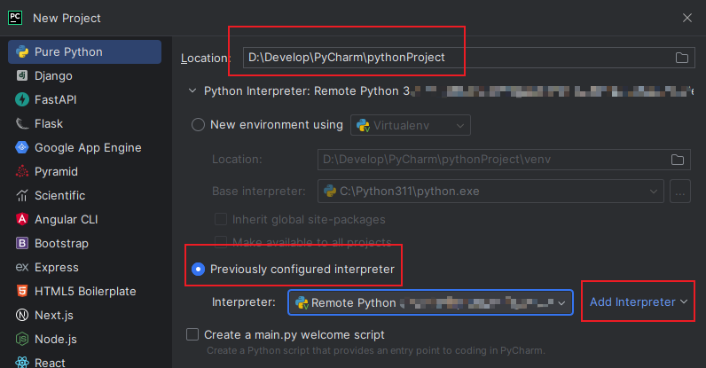
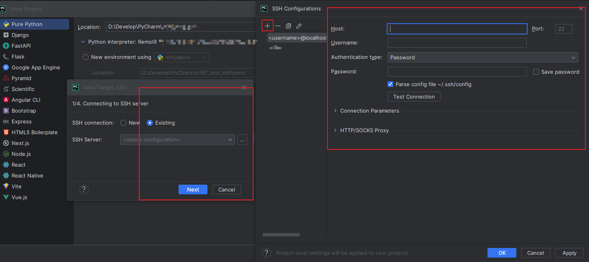
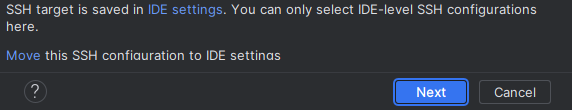
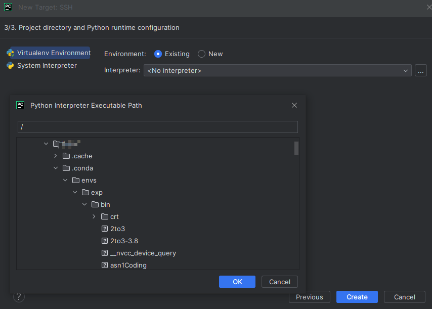
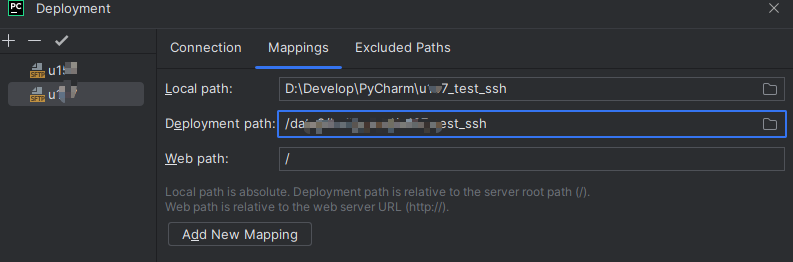
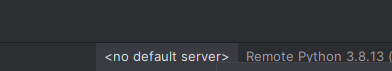
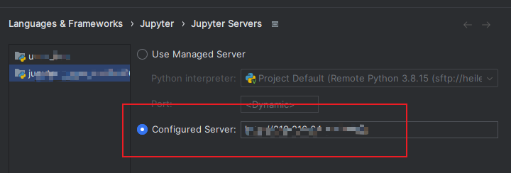

How to elegantly build a deep learning environment and debug and run your own programs locally using the resources of a remote server.
Prerequisites
- 搭载了显卡和conda环境的服务器，服务器可以联网(能conda、pip及wget)；
- 自己在服务器的账号引入了conda和cuda的环境变量
- 本地下载了PyCharm或VSCode；
- 拥有服务器管理员权限或者与管理员沟通过开放端口(只限启用jupyter才需要)
基本运行环境创建
Conda环境创建
-
登录自己服务器账号后，需要创建所需的虚拟环境：
1
2
3
4conda create -n env_name python=3.7
# 自己指定python版本
conda remove -n env_name --all
# 如果以后需要删除环境，则可以使用该命令 -
激活虚拟环境：
1
2
3
4
5
6
7conda activate env_name
# 或者
source activate env_name
# 关闭环境：
conda deactivate
# 或
source deactivate -
安装自己所需要的第三方库：
1
2
3
4pip3 install package_name
# 或者临时使用清华源
pip3 install -i https://pypi.tuna.tsinghua.edu.cn/simple package_name
# 或者使用conda安装，自行搜索
PyCharm配置
-
新建项目，为了方便，最好保持本地项目和服务器所需要配置的目录名一样；
-
在新建项目处，
Location处是本地的项目路径。 选择Preciously的解释器，并点击Add Interpreter，选择SSH;
-
如果本地已经在某个服务器上已经创建过解释器，则直接在
Existing处选择即可，否则，依旧点此处，再点击...处进入SSH Configurations页面；点击+，输入服务器地址、用户名和密码，之后再OK–>Next:
-
如果是第一次添加，则可能出现下图的情况，直接点击
Move，再点Next按照提示操作
-
如下图，选择
Existing，点击...，之后会出现一个选择路径的选项框，按照自己账户所存在的根目录(如home或者data)，在自己账号下面，逐步点击.conda–>envs–>需要的虚拟环境–>bin–>python3即可，选择OK和Create，按照提示进入项目中。
-
之后，选择
Tools–>Deployment–>Configuration...；一般来说，现在已经有了SFTP的选项，因为刚刚创建SSH解释器时，这里也同时附带被创建了； -
类似于选择
.conda的操作，选择好Local path和服务器Deployment path，即后续项目代码同步的路径； -
如果有需要排除同步的路径，例如模型本身或者较大的数据集，则可以在
Excluded Paths中选好本地及服务器不同步的路径；
-
完成这些配置后，此时是默认不自动同步的，因此可以进入
Tools–>Deployment–>Options..，将Upload changed files automatically to the default server改成On explicit save action，即自己按Ctrl+S时进行同步，当然也可以改成Always; -
之后，在PyCharm的右下角，将
<no default server>改成上面配置好的SFTP；
-
大功告成。
VSCode配置
- VSCode的配置相对比较简单，因此这里中简述基本步骤，不做相信说明，有需要可自行网上检索
-
下载微软官方插件
Remote - SSH； -
在
远程资源管理器中的右上角的小齿轮中，输入：1
2
3
4
5Host <远程主机名称>
HostName <远程主机IP>
User <用户名>
Port <ssh端口，默认22>
IdentityFile <本机SSH私钥路径>- Host ：连接的主机名称，可自定义；
- Hostname ：远程主机的 IP 地址；
- User ：用于登录远程主机的用户名；
- Port ：用于登录远程主机的端口，SSH 默认为 22 ；
- IdentityFile ：本地的私钥文件 id_rsa 路径；
-
一开始是没有私钥文件的，需要使用以下方式得到：
本地：
1
2cd ~/.ssh
# 复制 id_rsa.pub的内容服务器：
1
2
3
4cd ~/.ssh
vim authorized_keys
# 然后将刚刚复制的文件粘贴进去
# 若不熟悉vim请自行检索之后，本地的
id_rsa即为私钥 -
小齿轮还可以再新增其他服务器的或者其他账户的信息；
-
需要注意的问题：
- 创建好后，左下角可以选择连接服务器，连接后需要下载相应的插件，如
python和jupyter相关； - 有时候vscode的网络不好，连接服务器下载会非常慢，插件也是如此；
- 如果难以下载，可以本地下载好，包括服务器本身或者需要按照的插件，然后进入服务器的
.vscode-server中进行配置，具体自行查询
- 创建好后，左下角可以选择连接服务器，连接后需要下载相应的插件，如
配置远程Jupyter
虽然使用debug也非常方便，但是有时候还是希望可以利用Jupyter的cell执行特点来执行代码。
-
因此，先在虚拟环境中
pip install jupyter； -
假设服务器有比较严格的防火墙，那么请提前确定好端口(假设是4399)，让管理员开启：
1
2sudo firewall-cmd --zone=public --add-port=4399/tcp --permanent
sudo firewall-cmd --reload -
之后，初始化jupyter配置：
-
产生配置文件：
1
jupyter notebook --generate-config
-
设置密码：
1
jupyter notebook password
-
复制密钥：
1
2
3cd ~/.jupyter
vim jupyter_notebook_config.json
# 将password的value复制下来
-
-
配置端口：
1
2vim jupyter_notebook_config.py
# 拉到最后1
2
3
4c.NotebookApp.ip = '*'
c.NotebookApp.password = "刚刚复制的密钥"
c.NotebookApp.open_browser = False
c.NotebookApp.port = 4399 -
启动jupyter：
1
2
3jupyter notebook
# 然后测试一下，例如浏览器输入 http://浏览器ip:4399
# 输入token密码注意，在哪里启动
jupyter，那么其根目录就在哪里； -
长期挂载：
1
nohup jupyter notebook > note.log &
则会一直挂在后台，保持运行
-
在PyCharm中使用jupyter：
在项目中新建一个
jupyter文件，打开后右上角设置其configuration:
选中
Configured Server，输入http://xxx.xxx.xxx.xxx:4399，然后回到文件运行代码，运行时会提示输入密码，输入即可; -
大功告成！
后续若有新增，将会于此补充
Personal blog, please do not repost.
Author: abel-neko